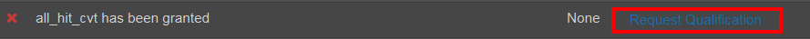

TSolo315
MturkCrowd
Six years of turking experience
TSolo315
MturkCrowd
Six years of turking experience
Where do I even start?
Starting out on Mechanical Turk can be tough. There is a lot of bad work to wade through and without the necessary knowledge or tools that bad work may be all you can see. In this guide I will outline the basics of Mechanical Turk and will help you discover how to avoid the garbage and how to find the tasks worth working on. Before we start, the following is going to assume you already have an activated MTurk account and a valid Amazon Payments account. If you haven't signed up for an account yet, do so now (they can take up to a week to be approved).
First, I will define a few frequently used terms:
When you first sign up for Mturk, your account will be limited to submitting 100 HITs a day. This is called the "probation period" and lasts for around ten days. If you submit at least a few HITs on each of these days your account will be unlocked and you will be able to submit up to 3800 HITs daily. This is important and should be done as quickly as possible. While reaching 3800 HITs is a challenge -- it's not difficult to hit the cap of 100, especially when working on batches. This can severely limit your earning potential. You should also prioritize increasing your number of approved HITs as quickly as possible. Requesters often place qualifications on their work that exclude turkers with a low number of submitted HITs. To efficiently increase your approved HIT count you should focus on working on quick, lower paying batch HITs.
Scripts
The primary Available HITs Page can be pretty hard to navigate and doesn't provide many quality of life features. For this reason several industrious turkers have created scripts that you can install in your browser to help make things significantly more efficient. These scripts will help you both find and accept higher quality HITs. The sooner you learn how to utilize these scripts the better off you will be (and the more money you will make). I have written a guide to Mechanical Turk scripts to help you get started.
Qualifications
Qualifications are an essential part of making decent money on Mturk. Some of the best HITs on Mturk require a qualification to work on. So how does one get these qualifications? You may have noticed a "request qualification" link as you were scanning Mturk.

This is NOT how you get most worthwhile qualifications. 99% of the time no one ever sees requests that were made in this way, although that button may still be worth clicking on as occasionally a qualification is granted automatically when you do so, and you have nothing to lose. Just don't expect anything. The real way to get worthwhile qualifications is to complete "qualification HITs," HITs a requester posts as a trial run to find workers who can produce quality results. If you want the qualification, you have to be there when these HITs are posted. Using a script to alert you when a qualification HIT is posted will help, along with using a script to track quality requesters. A solid qualification pool will take time to build, but will pay off big-time in the long run. If you ask an experienced turker for advice, the very first thing they tell you may very well be "always be qualing."
Some qualifications used by requesters are based on stats tied to your account rather than being assigned by the requester themselves, such as total HITs submitted or HIT approval rate. Others are assigned by Amazon for the use of all requesters, such as the adult content qualification or the so called premium qualifications (premium because Amazon, somewhat exorbitantly, charges requesters extra to use them).
Surveys
If you have attempted to make money online in the past, you may be very familiar with online surveys, and perhaps a little wary of them. I have good news and bad news. The good news is, surveys found on Mechanical Turk can pay rather well, significantly better than what you may be used to. The bad news is, most of them don't. There are a lot of poorly paying, painfully monotonous surveys to be found on Mturk and it may take some practice to learn how to avoid them. Working on surveys can be a little bit of a lottery because even if a requester provides a time estimate of how long the survey will take, these estimates are regularly inaccurate (often to a turkers benefit). For example, a four dollar survey HIT can provide an estimate of forty five minutes, six dollars an hour; the survey would go on to only take fifteen minutes, sixteen dollars an hour. Using a script that displays review information (like Turkerview or Turkopticon) can help A LOT in determining which surveys are worth your time and which ones to avoid.
Batches
When there is real money to be made on Mturk, it's usually from a good batch. Batches are great because unlike surveys it's relatively easy to determine exactly how well you are being paid, and you can drop out whenever you want at little cost. It's also much easier to get into the "flow" when working on a good batch than when working on surveys. Good batches are rare, and when they do pop up experienced turkers are sure to take advantage. For this reason these batches tend to disappear quickly (which is a big reason as to why qualifications that allow you to work on a good batch are so prized, there is less competition when the batch is behind a qual). When a good batch pops up you have to be ready to jump on it and get to work until it's dead.
Approval Rate and Rejections
It's common for new turkers to be anxious about work getting rejected. Requesters do often use approval rating as a qualification and when you haven't completed many HITs a few rejections can really tank your rating. This is understandable, and some care SHOULD be taken when have a brand new account (you want to avoid falling under a 97% approval rate) -- but for the most part rejections are not really worth worrying about. If you submit good work, your HITs will be approved a vast majority of the time. There will be some unfortunate exceptions but they will be few and far between. Don't let rejection anxiety stand in your way of working on something that pays well. People will often advise new turkers "build numbers," which means working on a lot of short batch HITs that may not pay very well but will raise your total submitted HITs number quickly so if you do get rejected your approval rating won't get hit as hard. My personal opinion is that this is mostly a waste of time, but if you find yourself unable to shake the rejection anxiety, it may be worthwhile for you. If you ever receive a rejection you believe is unfair, it doesn't hurt to send a polite email to the offending requester asking for clarification or for a rejection reversal. Some requesters are better at responding than others, many simply ignore all emails so your mileage may vary.
Mturk Communities
There are several forums where turkers gather to share good HITs, offer each other advice, or simply to socialize. Mturk has a relatively high learning curve and joining one of these communities can go a long way to helping you overcome it.
Mturk Crowd and Turkerview Forum both have "daily threads" where HITs and discussion relevant to the current day are posted. Regularly scanning through these threads can help you stay up to date on what's going on and is a good place to find valuable insight from experienced turkers.
Closing Comments
Starting out on Mturk can be overwhelming, but with a will to learn and some persistence it can become a solid way to make money. This will take time, and your hourly pay rate may start out fairly low, but as you gain experience and absorb information you will notice it steadily increase. Don't settle on bad work; unless you're desperate it's okay to be a little selective -- just be ready to grind when the quality work does show up. Best of luck, go out there and start making that money!
Learn More: Scripts